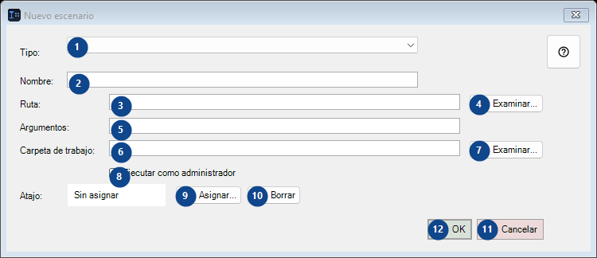
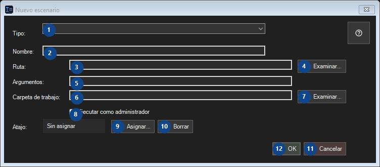

Nuevo escenario
Para qué sirve
Ejecute sus programas, scripts y descargas de yt-dlp desde la bandeja, esta tabla, un atajo o la barra de tareas.


Orden de uso
Lee las explicaciones numeradas, elige los valores necesarios y continúa con el comando de la ventana.
Elementos
1. Tipo:
Elige o introduce el valor de la etiqueta contigua. Revísalo antes de continuar.
Tus atajos2. Tipo:
Elige o introduce el valor de la etiqueta contigua. Revísalo antes de continuar.
Tus atajos3. Ruta:
Elige o introduce el valor de la etiqueta contigua. Revísalo antes de continuar.
Tus atajos4. Examinar...
Usa este comando para la acción indicada. Lee cualquier confirmación antes de aceptarla.
Tus atajos5. Ruta:
Elige o introduce el valor de la etiqueta contigua. Revísalo antes de continuar.
Tus atajos6. Ruta:
Elige o introduce el valor de la etiqueta contigua. Revísalo antes de continuar.
Tus atajos7. Examinar...
Usa este comando para la acción indicada. Lee cualquier confirmación antes de aceptarla.
Tus atajos8. Ejecutar como administrador
Usa este comando para la acción indicada. Lee cualquier confirmación antes de aceptarla.
Tus atajos9. Asignar...
Usa este comando para la acción indicada. Lee cualquier confirmación antes de aceptarla.
Tus atajos10. Borrar
Usa este comando para la acción indicada. Lee cualquier confirmación antes de aceptarla.
Tus atajos11. Cancelar
Usa este comando para la acción indicada. Lee cualquier confirmación antes de aceptarla.
Tus atajos12. OK
Usa este comando para la acción indicada. Lee cualquier confirmación antes de aceptarla.
Tus atajos